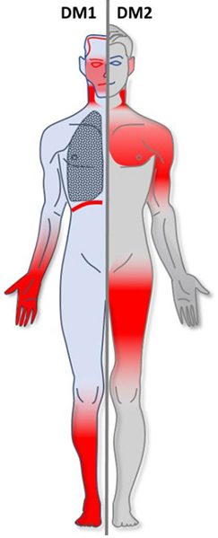

Información divulgativa. No sustituye la valoración de un profesional sanitario ni el consejo genético.


En pocas palabras
| Genes | DMPK, cromosoma 19 (tipo 1) y CNBP, cromosoma 3 (tipo 2) |
| Herencia | Autosómica dominante, con anticipación |
| Frecuencia | Alrededor de 1 de cada 8.000 personas el tipo 1; puede ser más frecuente según la región |
| Rasgos principales | Miotonía, debilidad muscular, cataratas, arritmias, somnolencia |
| Tratamiento | Seguimiento del corazón y la respiración, tratamiento de los síntomas; ensayos con terapias de ARN |
Qué es
La distrofia miotónica es una enfermedad que afecta a los músculos y a muchos otros órganos. Su rasgo característico es la miotonía: dificultad para relajar un músculo después de contraerlo. Una persona con miotonía puede dar la mano y tardar unos segundos en poder soltarla, o tener problemas para abrir los ojos tras cerrarlos con fuerza.
Hay dos tipos. El tipo 1 (DM1, o enfermedad de Steinert, que la describió en 1909) es el más frecuente y grave. El tipo 2 (DM2), descrito en los años noventa, es más leve y afecta sobre todo a los músculos cercanos al tronco.
Es la distrofia muscular más frecuente en adultos, y también una de las más variadas: va desde cataratas a los 60 años como único síntoma hasta formas graves en recién nacidos.
Causa: una repetición que crece
La DM1 se debe a una expansión de un triplete: una secuencia de tres letras, CTG, que se repite más veces de lo normal en el gen DMPK. Es el mismo tipo de mecanismo que en la enfermedad de Huntington y el síndrome X frágil.
| Número de repeticiones CTG | Situación |
|---|---|
| 5-34 | Normal |
| 35-49 | Premutación: sin síntomas, pero puede crecer en los hijos |
| 50-150 | Forma leve: cataratas, miotonía leve, a menudo en mayores |
| 100-1.000 | Forma clásica, del adulto |
| Más de 1.000 | Forma infantil o congénita |
Lo curioso es que el gen no deja de funcionar. El problema está en el ARN: la copia del gen con la repetición forma un ARN con una larga horquilla de CUG que se queda atrapado en el núcleo y "secuestra" una proteína llamada MBNL1, encargada de cortar y empalmar correctamente el ARN de muchos otros genes (el splicing). Sin ella, genes de músculo, corazón y cerebro producen versiones "fetales" de sus proteínas. Por ejemplo, un canal de cloro del músculo funciona mal, y eso explica la miotonía. Es un ejemplo de enfermedad causada por un ARN tóxico.
La DM2 se debe a una expansión de CCTG en el gen CNBP, con un mecanismo parecido.
Anticipación
En la DM1, la repetición tiende a crecer al pasar de padres a hijos, de modo que la enfermedad aparece antes y con más gravedad en cada generación. A esto se le llama anticipación. Una familia típica puede tener un abuelo con cataratas, una madre con miotonía y debilidad de adulta, y un hijo con la forma congénita.
La forma congénita, la más grave, casi siempre se hereda de la madre. Los bebés nacen con poco tono muscular (hipotonía), problemas para respirar y para tragar, y después tienen discapacidad intelectual. Muchos superan la etapa neonatal y mejoran su fuerza durante la infancia, pero desarrollan los síntomas del adulto más tarde.
Síntomas en el adulto
- Músculos: miotonía en manos y lengua; debilidad de la cara (con un rostro alargado y párpados caídos), del cuello, de manos y pies. Con los años, dificultad para caminar.
- Corazón: alteraciones de la conducción eléctrica y arritmias, que pueden causar muerte súbita. Es la complicación más importante que vigilar.
- Respiración: debilidad de los músculos respiratorios, apneas del sueño e infecciones.
- Ojos: cataratas precoces, a menudo antes de los 50, que pueden ser el primer síntoma.
- Cerebro: somnolencia diurna excesiva, apatía, cansancio y dificultades de atención y organización.
- Hormonas: resistencia a la insulina y diabetes, problemas de tiroides, falta de testosterona y calvicie frontal precoz en los hombres.
- Aparato digestivo: problemas para tragar, estreñimiento o colon irritable.
- Anestesia: mayor riesgo de complicaciones con ciertos anestésicos, algo que la persona debe advertir antes de cualquier operación.
Diagnóstico
Se sospecha por la combinación de debilidad, miotonía y antecedentes familiares (cataratas precoces, arritmias). El electromiograma muestra descargas miotónicas típicas, con un sonido que recuerda a una "moto que acelera y frena". La confirmación es el estudio genético, que mide el tamaño de la repetición. Al diagnosticar a una persona conviene ofrecer consejo genético a la familia, ya que muchos familiares tienen formas leves que desconocen.
Tratamiento
No hay todavía un tratamiento que corrija la causa, pero un seguimiento estructurado salva vidas:
- Electrocardiograma anual y, si hay alteraciones, holter o estudio electrofisiológico. Muchas personas necesitan un marcapasos o un desfibrilador implantable.
- Pruebas de función respiratoria, y ventilación no invasiva por la noche si hace falta.
- Cirugía de las cataratas.
- Mexiletina para la miotonía cuando molesta, y tratamientos para la somnolencia.
- Fisioterapia, ejercicio moderado, ortesis para los tobillos.
- Control de la glucosa, la tiroides y la deglución.
Investigación
La distrofia miotónica es una de las dianas más activas de las terapias de ARN. Varios fármacos en ensayos clínicos usan oligonucleótidos antisentido o ARN de interferencia unidos a anticuerpos que los llevan al músculo, para destruir el ARN tóxico y liberar a MBNL1. Los primeros resultados, entre 2024 y 2025, mostraron que el splicing mejoraba en el músculo y había señales de mejoría funcional, y ya hay ensayos más grandes en marcha. También se estudia la edición genética con CRISPR para eliminar la repetición.
Dónde informarse
- Federación ASEM (Federación Española de Enfermedades Neuromusculares)
- Myotonic Dystrophy Foundation (en inglés)
- Orphanet: distrofia miotónica de Steinert
Ver también: Enfermedad de Huntington, Síndrome X frágil y Mutaciones y variantes.
Fuentes
- Thornton CA. Myotonic dystrophy. Neurol Clin. 2014;32(3):705-719. doi:10.1016/j.ncl.2014.04.011
- Johnson NE. Myotonic muscular dystrophies. Continuum (Minneap Minn). 2019;25(6):1682-1695.
- Brook JD, McCurrach ME, Harley HG, et al. Molecular basis of myotonic dystrophy: expansion of a trinucleotide (CTG) repeat at the 3′ end of a transcript encoding a protein kinase family member. Cell. 1992;68(4):799-808. doi:10.1016/0092-8674(92)90154-5
- Ashizawa T, Gagnon C, Groh WJ, et al. Consensus-based care recommendations for adults with myotonic dystrophy type 1. Neurol Clin Pract. 2018;8(6):507-520. doi:10.1212/CPJ.0000000000000531